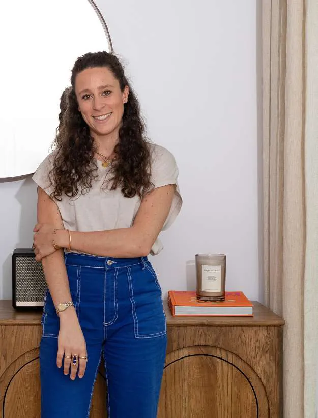

Stouls Studio / À propos
Margaux Stouls Architecte d’intérieur et designer
Derrière Stouls Studio, il y a moi. La personne que vous rencontrez au premier rendez-vous est aussi celle qui dessine vos plans, assure le suivi de votre chantier et mène le projet jusqu’aux derniers détails.
Diplômée en architecture d’intérieur et en design produit, j’aime penser un projet dans son ensemble : la circulation dans un appartement, la lumière, les volumes, mais aussi le dessin d’un meuble, le choix d’une matière ou la justesse d’une finition. Cette double formation me permet de passer naturellement de la vision globale aux détails qui donnent son caractère à un lieu.
J’ai créé Stouls Studio en 2019 avec l’envie de concevoir des intérieurs personnels, agréables à vivre et adaptés à ceux qui les habitent. Depuis, j’ai mené plus de 60 projets, de la conception au suivi des travaux.
Aujourd’hui, je travaille aussi bien avec les personnes qui souhaitent trouver leur appartement à Paris depuis l’étranger qu’avec celles qui veulent repenser un lieu qu’elles habitent déjà. Pour les premières, je suis leur regard sur place : je recherche, je visite, je partage mes découvertes et j’imagine les possibilités de chaque bien. Pour les secondes, je transforme leurs envies en un projet concret, conçu sur mesure et suivi sur le terrain.
Dans les deux cas, mon approche reste la même : écouter, comprendre votre manière de vivre et révéler le potentiel d’un lieu pour en faire un intérieur qui vous ressemble.
Ma manière de travailler
Une seule interlocutrice, du début à la fin.
Des devis d’entreprises communiqués dans leur intégralité. Vous contractez directement avec les entreprises.
Des décisions présentées avec une image et un prix.
À Paris et ailleurs, en français ou en anglais.
Le métier d’architecte d’intérieur
L’architecte d’intérieur repense l’intérieur d’un bâtiment : l’emplacement des cloisons, de la cuisine et des salles de bain, l’éclairage des pièces, les matériaux. Elle dessine les plans à partir desquels les entreprises construisent et assure le suivi du chantier.
| Métier | Rôle |
|---|---|
| Architecte d’intérieur | Distribution, plans techniques, matériaux, éclairage, menuiseries, entreprises et suivi du chantier. |
| Décorateur | Mobilier, couleurs, tissus et mise en scène, sans toucher à la distribution ni aux réseaux. |
| Bureau d’études structure | Calcule et valide toute modification d’un mur porteur ou d’un plancher. Sollicité quand le projet l’exige. |
| Chasseur d’appartement | Cherche le bien et négocie l’achat. Sa mission s’arrête à la signature. |
J’assure les deux premiers rôles, je fais intervenir le troisième quand le projet le demande, et je cherche l’appartement pour que l’achat et les travaux soient jugés ensemble.
Ce que je ne fais pas
- Du conseil fiscal ou juridique. C’est le rôle de votre notaire et de votre conseiller fiscal.
- De la gestion locative. Je remets l’appartement terminé au gestionnaire de votre choix.
- Détenir vos fonds. Le notaire détient les fonds de l’achat, et vous payez les entreprises directement.
Les réalisations du studio sont dans le portfolio.